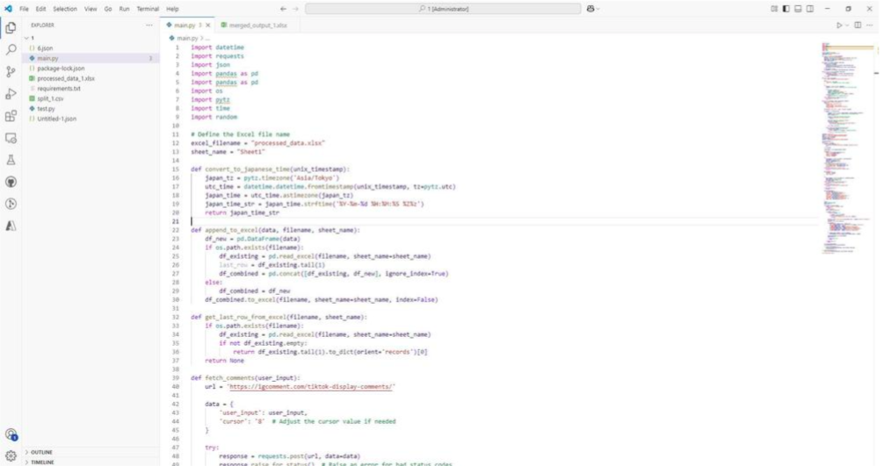
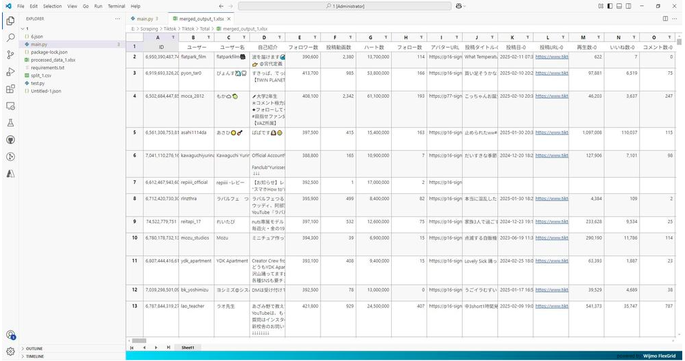
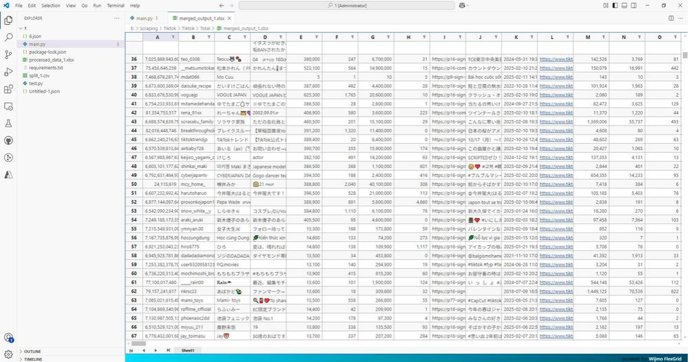

Tiktok-Scraping



📌 概要
本プロジェクトは、TikTokのユーザー名をもとに、該当ユーザーのプロフィール情報を自動で取得するツールです。
情報取得には、Tokbackup というWebサービスを利用しています。
🔍 使用目的
- TikTokインフルエンサーの分析
- 市場調査・マーケティング
- ユーザーデータのリスト化 など
※ 取得する情報は、あくまで公開されているプロフィール情報に限られます。
🖥️ 機能概要
- ユーザー名を入力して、Tokbackup経由で情報を取得
- プロフィールに関する情報をスクレイピング
- 出力形式はプロジェクトに応じてカスタマイズ可能（例：CSV、Excel、JSONなど）
🔧 使用方法
- ツールを起動します
- 対象のTikTokユーザー名を入力します
- Tokbackupからプロフィール情報を取得し、結果を出力します
※ 詳細な実行手順は main.py または関連ドキュメントをご参照ください。
⚠️ 注意事項
- 本ツールは Tokbackup の公開情報を利用しています。
- サービスの仕様変更により、正常に動作しなくなる可能性があります。
- TikTokおよびTokbackupの利用規約に則ってご使用ください。
- 非公開アカウントや制限のある情報は取得できません。
📜 ライセンス
ライセンス：MIT
MITライセンスのもとで公開されており、個人・商用を問わず自由に使用・改変・再配布が可能です。
ただし、著作権表示およびライセンス文の保持をお願いいたします。
📬 お問い合わせ
ご不明点や不具合のご報告は、GitHubのIssueまたは開発者までご連絡ください。